Connecticut · 2014-15 to 2025-26 · What the state's teacher-level staffing records say about experience drift, churn and the ten-year claim
A personal report by Scott Sauyet · scott@sauyet.com · Not an official town document
This report uses a teacher-level extract from the Connecticut State Department of Education (CSDE): one record per classroom teacher per assignment per year, for every public school district in the state, for the twelve school years 2014-15 through 2025-26. CSDE’s Performance Office delivered it on October 23, 2026 in response to a data request, and confirmed the field definitions used here on November 23, 2026. The extract covers general-education and special-education classroom teachers; its full-time-equivalent (FTE) totals tie to CSDE’s published FTE Staffing report within 0.1% statewide for 2016 through 2023. Four choices shape every figure. Experience is a count of school years taught in Connecticut public schools since 2002-03, including the current year, so a first-year teacher is at year 1; service before 2014-15 is capped at 13, so “13 or more” is the top band, exact in every year, and because the state’s records begin in 2002-03 every experience figure is a floor on real experience. Counts are head counts, one record per teacher per year, assigned to the district holding most of their FTE. Statewide figures cover the 167 local and regional school districts only; charter, magnet, technical and state-agency schools are excluded from comparisons. The 2014-15 extract is about 4% short of the published teacher count, so it serves as a roster baseline but not as a level, and every time series starts in 2015-16.
Introduction
At the Andover Board of Finance’s regular meeting on May 27, 2026, First Selectman Jeff Maguire urged the board to read the new teachers’ contract and “see what’s going to happen in 10 years when all these young people are all at the top step. How is this town going to afford it?” (Board of Finance, May 27, 2026, at 53:11; machine transcript, the recording is authoritative.)
The remark describes a mechanism, and the mechanism is testable. If a district’s teachers stay put, every one of them is ten steps further along the salary schedule in ten years, and a young staff becomes an expensive one. If teachers leave and are replaced, the schedule refills from the bottom and the mix stays roughly where it was. Which of these happens in Connecticut is not a matter of opinion: the state keeps a record of every teacher in every district every year, and that record can be followed forward.
This report follows it. It asks four questions:
The answers, in brief: the shape of the workforce is nearly the same every year; roughly one teacher in twelve leaves their district each year and one in fourteen leaves Connecticut public schools altogether; the no-churn model predicted that every teacher on a 2014 roster would be at the top step by 2024 and the actual share was about three in five; and Andover’s experience mix is where it was a decade ago, with a cluster of recent hires that the churn figures say will thin out the way every such cluster does.
Definitions
What “top step” means. The Andover Board of Education’s contract with the Andover Education Association for 2025–2029 (Appendix B) has ten salary steps in each of five degree lanes, and eligible teachers advance one step each July 1. The top step is therefore ten years of credited service, and a teacher hired at step 1 reaches it in their tenth year. Placement on the schedule credits prior teaching in public, private and military dependency schools (Article 6), so a teacher’s step is at least the number of years this report can count for them. Where the report gives a share of teachers “at 10 or more years,” the share at the top step is at least that high.
Why the top band is 13 or more. CSDE’s record of certified staff begins with 2002-03, so the extract counts a teacher’s pre-2014 service only back to that year and caps it at 13. Any threshold at or below 13 years is exact in every year of the panel, which is why the report’s bands are 1–3, 4–7, 8–12 and 13 or more, and why the contract’s threshold of 10 can be applied directly. What cannot be seen is how far above 13 a senior teacher sits: a “13” in 2014-15 may have been teaching since 1985. Medians and means are reported only where the cap does not affect them.
Head counts, not FTE. A teacher is a teacher whether at 0.6 FTE or 1.0; the claim under test is about people on steps. Part 2 shows the result FTE-weighted as well, and it does not change.
Why the series start in 2015-16. The 2014-15 extract has about 4% fewer teachers than CSDE’s published count for that year (the published count for every later year ties within 0.5%). Nothing in this report uses 2014-15 as a level. It is used once, as the roster that the ten-year test ages forward, where a slightly short roster makes no difference to a share.
Suppression. Published tables give district counts only in the four bands above. No table identifies an individual teacher’s year of service, and nothing about any teacher’s arrival or departure is published below the district total.
The shape
Figure 1 shows the share of town-district teachers at each year of experience from 1 to 12, one panel per school year. The 13-or-more group, which holds about half of all teachers, is given as a figure in each panel’s header rather than drawn as a bar, because as a bar it would be four times the height of any other and flatten the shape that matters.
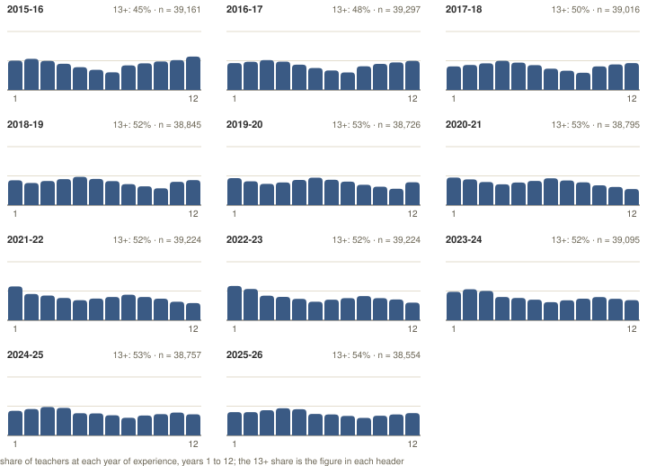
The first twelve years are nearly level in every panel. There is a shallow trough that walks rightward one year at a time (the small cohorts hired during the 2008–2012 recession) and a bump behind it (the larger cohorts hired after), but neither changes the picture: Connecticut’s districts carry roughly as many first-year teachers as sixth-year or eleventh-year teachers, year after year.
The one number that moves is the 13-or-more share, from 45% in 2015-16 to 54% in 2025-26. Most of that rise came in three years, 2015-16 to 2018-19, and it has been nearly flat since. Part 4 shows what it was: the large cohorts hired in the early 2000s crossing the 13-year line, after which the line was behind them. At the contract’s threshold of ten years, where the early-2000s cohorts had already crossed by 2015, the share moved from 61% to 65% over the same decade.
Glastonbury is the clearest single-district example of a hiring wave passing through, and Figure 2 shows it: a bulge at years 9 through 12 in 2015-16 that reaches the 13-year line by 2018-19 and then disappears into the header figure, which rises from 53% to 70% and then holds.
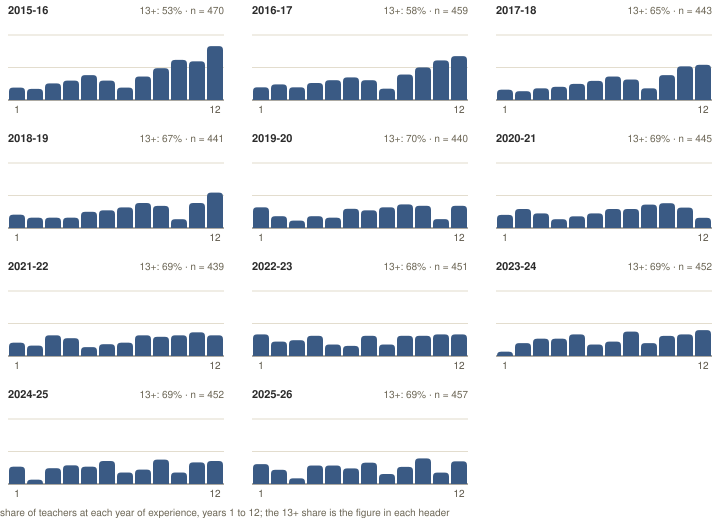
| School year | Teachers | Students | Teachers per 100 | Median years | 1–3 | 4–7 | 8–12 | 13 or more | 10 or more | Retained next year |
|---|---|---|---|---|---|---|---|---|---|---|
| 2015-16 | 39,161 | 503,278 | 7.63 | 12 | 15.3% | 14.8% | 24.4% | 45.4% | 61.1% | 92.6% |
| 2016-17 | 39,297 | 499,780 | 7.72 | 12 | 14.5% | 16.3% | 21.2% | 48.0% | 62.1% | 92.5% |
| 2017-18 | 39,016 | 495,261 | 7.74 | 13 | 12.9% | 17.5% | 19.2% | 50.4% | 63.4% | 92.7% |
| 2018-19 | 38,845 | 490,748 | 7.78 | 13 | 12.2% | 17.9% | 17.9% | 52.0% | 63.2% | 92.2% |
| 2019-20 | 38,726 | 487,319 | 7.82 | 13 | 12.3% | 17.2% | 17.4% | 53.1% | 63.0% | 92.7% |
| 2020-21 | 38,795 | 472,479 | 8.08 | 13 | 13.1% | 16.1% | 17.4% | 53.4% | 62.7% | 91.9% |
| 2021-22 | 39,224 | 472,658 | 8.19 | 13 | 14.5% | 14.9% | 18.2% | 52.4% | 62.2% | 91.2% |
| 2022-23 | 39,224 | 472,890 | 8.18 | 13 | 15.4% | 14.4% | 18.3% | 51.9% | 62.3% | 92.0% |
| 2023-24 | 39,095 | 472,242 | 8.17 | 13 | 15.2% | 14.4% | 18.2% | 52.2% | 63.3% | 92.3% |
| 2024-25 | 38,757 | 467,631 | 8.19 | 13 | 13.6% | 15.7% | 17.6% | 53.1% | 64.3% | 92.9% |
| 2025-26 | 38,554 | 456,637 | 8.35 | 14 | 12.3% | 16.4% | 17.1% | 54.2% | 65.0% |
Notes: Local and regional school districts only. Students are the October enrollment count from EdSight for the same school year. “Retained next year” is the share of the year’s teachers who taught in the same district the following year, so it is blank for 2025-26. The 2025-26 median of 14 is exact: the cap affects a median only above 13 + (years since 2014), and no year’s median comes close. The share at 1–3 years was between 12% and 16% in every year, which is the arithmetic behind the churn figures in Part 3: about one teacher in twenty-five is in their first year, every year.
The ten-year test
The claim is a prediction, so it can be run backward. Take every teacher on a district’s 2014-15 roster, add ten years to each, and let nobody leave or arrive. That is the no-churn model, and it is exactly what “in ten years they will all be at the top step” describes. Then compare the result with the people who were actually teaching in that district in 2024-25.
At the contract’s threshold the model’s prediction is 100% by construction: every teacher on a 2014-15 roster had at least one year of service, so ten years later every one of them is past step 10. At the data’s own top band, 13 or more, the model predicts between 89% and 95% depending on the group, because a few 2014-15 first- and second-year teachers would still be short of 13.
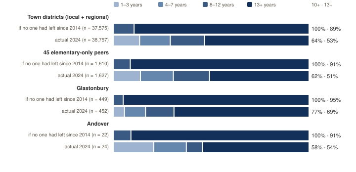
100% share of 2014-15 teachers the no-churn model puts at the top step by 2024-25, in every district
64% actual share of town-district teachers at 10 or more years in 2024-25
58% the actual share in Andover: 14 of 24 teachers
59% share of the 2014-15 town-district roster still teaching in a town district in 2024-25; in Andover, 11 of 22
The model is not a little wrong. It is wrong by a third of the workforce.
The test was run eight ways: two ten-year windows, head count and FTE-weighted, the data’s 13-year band and the contract’s 10-year threshold, and an alternative reading of the experience field that adds a year to everyone present in 2014-15 (which can only raise the prediction). Each cell reads predicted → actual.
| Variant | Town districts | 45 peers | Glastonbury | Andover |
|---|---|---|---|---|
| 2014-15 → 2024-25, at 10 or more years | 100% → 64% | 100% → 62% | 100% → 77% | 100% → 58% |
| 2015-16 → 2025-26, at 10 or more years | 100% → 65% | 100% → 63% | 100% → 78% | 100% → 56% |
| 2014-15 → 2024-25, at 10 or more, FTE-weighted | 100% → 64% | 100% → 62% | 100% → 77% | 100% → 57% |
| 2014-15 → 2024-25, at 13 or more years | 89% → 53% | 91% → 51% | 95% → 69% | 91% → 54% |
| 2015-16 → 2025-26, at 13 or more years | 90% → 54% | 91% → 52% | 96% → 69% | 100% → 48% |
| 2014-15 → 2024-25, at 13 or more, FTE-weighted | 89% → 53% | 91% → 51% | 95% → 68% | 91% → 52% |
| 2015-16 → 2025-26, at 13 or more, FTE-weighted | 90% → 54% | 91% → 52% | 97% → 69% | 100% → 47% |
| 2014-15 → 2024-25, alternative experience count | 94% → 56% | 95% → 54% | 98% → 72% | 100% → 54% |
Notes: “45 peers” are the elementary-only districts used in Andover’s Per-Pupil Spending in Context, Norwich excluded. Glastonbury is included as the state’s clearest hiring-wave district (Part 4); even there, where the senior share really did rise, the gap between model and reality is 23 points. The alternative count treats 2014-15 as outside the pre-2014 service field; CSDE confirmed on November 23, 2026 that it is inside, so the first row is the correct reading and the last is an upper bound.
The gap does not depend on the threshold, the window, the weighting or the counting rule. It is between 22 and 42 points everywhere, and it is the same thing in every case: the people who were not there anymore.
Churn
The no-churn model fails because teachers leave, and the record shows exactly when. Figure 4 pools every town-district teacher-year from 2015-16 through 2023-24 and asks, for each year of experience, what share did not teach in the same district the following year, and what share did not teach in any Connecticut public school.
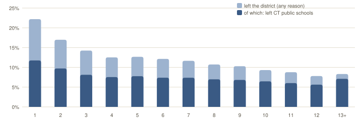
A first-year teacher has a 22% chance of not being in the same district next year and a 12% chance of not being in Connecticut public schools at all. Both rates fall steadily with experience, to 8% and 6% by year twelve. The senior group leaves at about the same rate as a twelfth-year teacher, but nearly all of its departures are departures from the system: that is retirement.
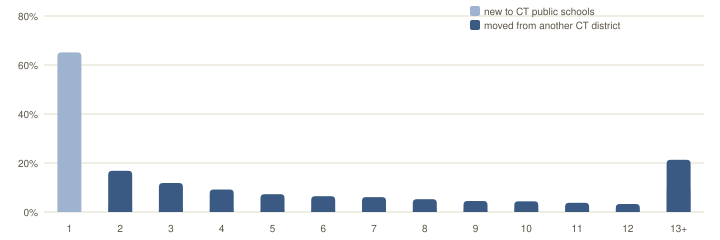
Two kinds of teacher arrive in a district. Those new to Connecticut public schools arrive overwhelmingly at the bottom: 65% are at year 1 as this report counts it, and almost all the rest are within a few years of it (some have taught elsewhere, which the state’s records do not see). Those who move from another Connecticut district arrive at every point in a career, 29% within their first three years and 21% already past thirteen. Over 2015-16 to 2025-26, town districts took in 31,080 teacher-years of the first kind and 13,149 of the second.
Figure 6 takes every town-district teacher of 2015-16, groups them by their experience that year, and asks where they were in 2025-26.
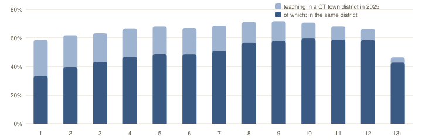
| Years in 2015-16 | Teachers | In a CT town district, 2025-26 | In the same district |
|---|---|---|---|
| 1 | 1,964 | 59% | 33% |
| 2 | 2,083 | 62% | 40% |
| 3 | 1,947 | 63% | 43% |
| 4 | 1,755 | 67% | 47% |
| 5 | 1,525 | 68% | 49% |
| 6 | 1,349 | 67% | 48% |
| 7 | 1,180 | 69% | 51% |
| 8 | 1,643 | 71% | 57% |
| 9 | 1,786 | 72% | 58% |
| 10 | 1,908 | 71% | 60% |
| 11 | 1,999 | 68% | 59% |
| 12 | 2,238 | 66% | 58% |
| 13 or more | 17,784 | 46% | 43% |
Notes: Pooled exit rates in Figure 4 cover 2015-16 through 2023-24 (the last year with a following year). The cohort in Figure 6 and the table is the 2015-16 roster of all town districts, 39,161 teachers; “in the same district” means the district that held most of the teacher’s FTE in both years. A teacher who left and came back counts as present. CSDE publishes a statewide educator attrition rate on EdSight; it does not break attrition out by career stage, which is what this part adds.
This is the ten-year claim seen from the other side. Of the first-year teachers of 2015-16, the “young people” of that year, 59% were teaching in a Connecticut town district ten years later and only a third were in the district that hired them. The cohorts most likely to still be in place after a decade are the ones that were already eight to ten years in, and even they lose two in five.
Drift
Churn does not make drift impossible. A district that stops hiring, or hires a large cohort all at once, will see its experience mix move. This part asks how much it moves, in which districts, and what goes with it.
Figure 7 shows the change in the 13-or-more share from 2015-16 to 2025-26 for each of the 160 town districts with at least ten teachers in both years.
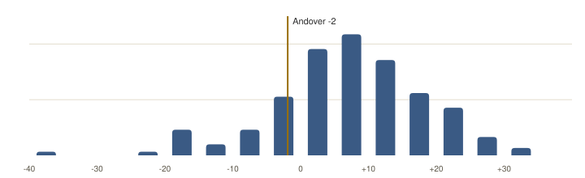
The median district moved up 8 points in ten years. Forty-five districts stayed within 5 points of where they started, 86 within 10, and 74 moved more than 10 points in one direction or the other. The drift is real, it is upward on average, and it is about a point a year.
Four things might explain which districts drifted: size, turnover, enrollment change and student need. Only one of them does much.
| Against the ten-year change in the 13+ share | Correlation (r) | Districts |
|---|---|---|
| Annual turnover (share leaving the district) | −0.41 | 160 |
| District size (log of teacher count) | +0.31 | 160 |
| Share of students classified high-needs | −0.18 | 160 |
| Enrollment change, 2015-16 to 2025-26 | −0.16 | 159 |
| Teacher-count change, 2015-16 to 2025-26 | −0.08 | 160 |
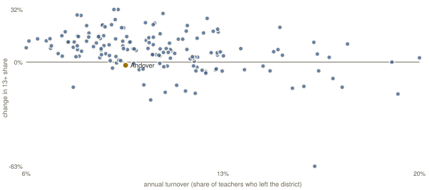
Turnover is the one that carries the finding: the districts whose senior share rose are the districts where fewer people leave each year. Size matters because small districts bounce (a district with twelve teachers moves 8 points when one of them retires), not because large districts drift more; the yearly shape shift correlates with log size at r = −0.85, and the median district under 50 teachers moved only 1 point net over the decade while moving 10 points in absolute terms. Need and enrollment barely register once turnover is in view.
| Teachers in 2025-26 | Districts | Median change | Median absolute change | Median yearly shape shift | Median turnover |
|---|---|---|---|---|---|
| Under 50 | 34 | +1 pts | 10 pts | 0.56 years | 12.0% |
| 50–149 | 42 | +7 pts | 8 pts | 0.33 years | 10.7% |
| 150–399 | 58 | +9 pts | 9 pts | 0.23 years | 9.6% |
| 400 or more | 26 | +9 pts | 9 pts | 0.19 years | 9.2% |
Notes: Turnover is the mean over 2015-16 to 2024-25 of the share of a district’s teachers who did not teach there the next year. The yearly shape shift is the earth-mover distance between consecutive years’ experience distributions (capped at 13), in years: how far the distribution had to move, on average, from one year to the next. Student need is the share of a district’s ELA test takers classified high-needs on EdSight, latest year. Correlations are Pearson’s r on district-level values; none of the four is presented as a cause.
The upward drift has a recognizable source. Thirteen districts of the 103 with at least a hundred teachers entered the panel with a pronounced bulge at years 10 through 12 of experience: the cohorts hired in the early 2000s, when enrollment was peaking. Figure 9 follows their 13-or-more share.
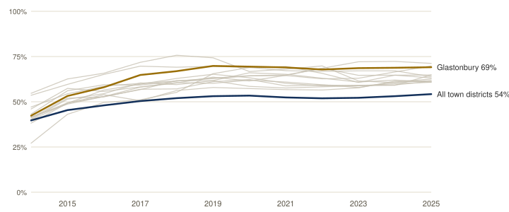
| District | Teachers, 2014-15 | 13 or more, 2014-15 | Peak | Peak year | 13 or more, 2025-26 |
|---|---|---|---|---|---|
| Mansfield | 106 | 55% | 76% | 2018-19 | 62% |
| Rocky Hill | 190 | 41% | 65% | 2025-26 | 65% |
| Waterford | 192 | 43% | 69% | 2022-23 | 65% |
| Monroe | 235 | 54% | 70% | 2017-18 | 63% |
| Glastonbury | 449 | 42% | 70% | 2019-20 | 69% |
| Madison | 258 | 27% | 69% | 2020-21 | 64% |
| Wethersfield | 247 | 41% | 66% | 2020-21 | 61% |
| North Haven | 248 | 46% | 63% | 2025-26 | 63% |
| East Lyme | 240 | 40% | 61% | 2024-25 | 61% |
| Wallingford | 463 | 47% | 70% | 2025-26 | 70% |
| Seymour | 161 | 42% | 72% | 2024-25 | 71% |
| Wolcott | 186 | 38% | 65% | 2019-20 | 61% |
| South Windsor | 337 | 40% | 62% | 2019-20 | 61% |
Notes: A district qualifies if its 2014-15 roster had at least 2.2 times as many teachers per year of experience at years 10–12 as at years 1–9. The 2014-15 roster is used here as a shape, not a level.
Every one of the thirteen rose by 15 to 42 points as the wave crossed the 13-year line, and then the rise stopped. Eight had peaked by 2020-21; five of those have since fallen back by 5 to 14 points as the wave reached retirement. Five (Rocky Hill, North Haven, East Lyme, Wallingford and Seymour) were still at their peak in 2024-25 or 2025-26, and they share a profile: annual turnover of 6% to 10%, below the state’s median, and enrollment down 2% to 15% over the decade, so they have hired little. That is what a rising senior share looks like in practice. It is a district that stopped hiring, not a district whose contract aged.
Closer to home, the same pattern appears in the region’s own districts. Regional School District 8 (RHAM), whose enrollment fell 36% between 2015-16 and 2025-26 on EdSight’s count, saw its 13-or-more share go from 37% to 69%, a 32-point rise that ties Regional District 13 for the largest of any district in the state with more than a hundred teachers; six of the eight largest rises in the state belong to districts whose enrollment fell by a quarter or more. Hebron’s share went from 40% to 59%, Marlborough’s from 53% to 67%. Andover’s did not move.
Andover
Andover Elementary School employed between 21 and 27 classroom teachers in each year of the panel, so a single hire or retirement moves its percentages by four points and the counts are the honest unit. Figure 10 and the table give them.
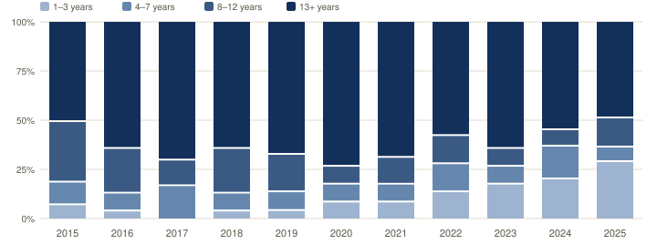
| School year | Teachers | FTE | Students | Teachers per 100 | Median years | 1–3 | 4–7 | 8–12 | 13 or more | 10 or more | Arrived | Left after |
|---|---|---|---|---|---|---|---|---|---|---|---|---|
| 2015-16 | 26 | 24.8 | 250 | 9.92 | 12.5 | 2 | 3 | 8 | 13 | 17 | 4 | 5 |
| 2016-17 | 22 | 20.8 | 225 | 9.24 | 14 | 1 | 2 | 5 | 14 | 17 | 1 | 2 |
| 2017-18 | 23 | 21.8 | 204 | 10.69 | 15 | 0 | 4 | 3 | 16 | 18 | 3 | 3 |
| 2018-19 | 22 | 20.9 | 191 | 10.94 | 14.5 | 1 | 2 | 5 | 14 | 17 | 2 | 3 |
| 2019-20 | 21 | 19.3 | 195 | 9.90 | 16 | 1 | 2 | 4 | 14 | 17 | 2 | 0 |
| 2020-21 | 22 | 20.3 | 174 | 11.67 | 16.5 | 2 | 2 | 2 | 16 | 18 | 1 | 3 |
| 2021-22 | 22 | 20.3 | 192 | 10.57 | 17 | 2 | 2 | 3 | 15 | 17 | 3 | 4 |
| 2022-23 | 21 | 19.8 | 197 | 10.05 | 15 | 3 | 3 | 3 | 12 | 14 | 3 | 0 |
| 2023-24 | 22 | 20.3 | 205 | 9.90 | 15.5 | 4 | 2 | 2 | 14 | 15 | 1 | 1 |
| 2024-25 | 24 | 22.3 | 239 | 9.33 | 14 | 5 | 4 | 2 | 13 | 14 | 3 | 1 |
| 2025-26 | 27 | 25.8 | 245 | 10.53 | 12 | 8 | 2 | 4 | 13 | 15 | 4 |
Notes: “Arrived” is the number of the year’s teachers who did not teach in Andover the year before; “Left after” is the number who did not teach in Andover the following year, whether they moved to another district or left Connecticut public schools. Both are counts of people, with nothing about which people. Andover’s FTE in the extract matches EdSight’s published general- plus special-education teacher FTE to the tenth in every year from 2016-17 on. Students are EdSight October enrollment.
Three things stand out.
The senior share has not moved. Thirteen of Andover’s teachers were at 13 or more years in 2015-16 and thirteen were in 2025-26; the count has been between 12 and 16 in every year of the decade. At the contract’s threshold the share went from 65% (17 of 26) to 56% (15 of 27). Among the 45 peer districts, Andover’s ten-year change ranks 26th of 45, in the middle.
The recent hiring is real. From 2015-16 through 2021-22 Andover never had more than two teachers in their first three years. In 2025-26 it had eight, after taking on eleven teachers in four years while losing only two. That cluster at the bottom of the schedule is what the May 27 remark described, and on the numbers it is accurately described: nearly a third of the current staff is within three years of the start.
The churn figures say what happens next. Part 3 found that of first-year teachers, 59% are still in Connecticut public schools after ten years and 33% are still in the district that hired them; for teachers two or three years in, the same-district figure is 40% to 43%. Applied to Andover’s eight early-career teachers, the expectation is that three or four of them will be at Andover’s top step in 2035-36, not eight. Andover’s own record over the decade points the same way: of the 22 teachers on the 2014-15 roster, 11 were still there in 2024-25.
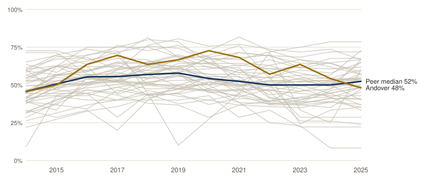
Figure 11 puts Andover among its peers. The peer median share at 13 or more moved from 51% to 52% in ten years; at 10 or more, from 66% to 63%. Small elementary districts, taken together, are not getting more senior. Andover’s line is more volatile than the median, as every line of a 22-teacher district is, and it ends within four points of where it began.
At a glance
| Question | Answer |
|---|---|
| Does the experience distribution drift upward statewide? | Slowly. The 13-or-more share in town districts rose from 45% to 54% in a decade, nearly all of it by 2018-19; the 10-or-more share rose from 61% to 65%. |
| What did the no-churn model predict? | That 100% of each 2014-15 roster would be at the top step by 2024-25. The actual share was 64% statewide, 62% among peers, 58% in Andover. |
| How much churn is there? | About 8% of teachers leave their district each year and 7% leave Connecticut public schools; first-year teachers leave at 22% and 12%. |
| Where does the senior share rise? | Where hiring stops: the drift correlates with low turnover (r = −0.41) and not with size, need or enrollment. Hiring waves raise it for four or five years, then retirement caps it. |
| Is Andover’s workforce getting more senior? | No. Thirteen teachers at 13 or more years in 2015-16 and thirteen in 2025-26; the share at the top step went from 65% to 56%. |
| What becomes of Andover’s recent hires? | On the state’s ten-year survival rates, three or four of the eight early-career teachers of 2025-26 would be expected at Andover’s top step in 2035-36. |
Takeaways
The no-churn model is wrong by a third of the workforce, everywhere. It predicts that every 2014-15 teacher is at the top step in 2024-25. The actual share at ten or more years is 64% across the state’s town districts, 62% in Andover’s peer group, 77% in the district with the state’s strongest hiring wave, and 58% in Andover. No window, weighting or counting rule narrows the gap below 22 points.
The shape of the workforce is stable. The share of town-district teachers in their first three years was between 12% and 16% in every one of eleven years; the median years of experience moved from 12 to 14. A district refills from the bottom at about the rate it empties from the top, and Connecticut’s roughly 39,000 classroom teachers look much the same in 2025-26 as in 2015-16.
Drift exists, and it is small. The median district’s 13-or-more share rose 8 points in ten years, about a point a year. The statewide rise is mostly the large early-2000s cohorts crossing the 13-year line between 2015-16 and 2018-19; at the contract’s own ten-year threshold the decade’s change is 4 points.
Drift follows hiring, not contracts. The districts whose senior share rose are the ones with the lowest turnover and the least hiring, including five whose enrollment fell and whose hiring-wave cohort is still in place. Every Connecticut district has a step schedule; only the ones that stopped hiring drifted.
Andover is not drifting. Its senior count has been 12 to 16 teachers in every year of the decade, its ten-year change ranks in the middle of its peers, and the peer group as a whole moved one point. What changed at Andover is a cluster of eleven hires in four years, visible as eight teachers at years 1 to 3 in 2025-26 against none to two in the years before 2022.
A new cohort thins by half in a decade. Of the state’s 2015-16 first-year teachers, 59% were still in Connecticut public schools in 2025-26 and 33% were in the district that hired them; of Andover’s own 2014-15 roster, half remained in 2024-25. The remark’s arithmetic holds only for the teachers who stay, and the record says that is a minority of any young cohort.
Caveats
Documentation
State data
QUERY_FOR_STAFF_DETAIL_AND_CONT). Field definitions confirmed by email,
November 23, 2026. The teacher-level file is not published; the district-level
aggregate derived from it is published with this report.Local documents
Method
Years_2002to2014 (service in Connecticut public schools from
2002-03 through 2014-15 inclusive, capped at 13) plus one for each year after
2014-15 in which the teacher appears; a missing year earns nothing. A teacher
with more than one assignment or district in a year is counted once, in the
district holding most of their FTE, with FTE capped at 1.0 where FTE is used.teacher-experience-districts.csv and .xlsx,
gives every local and regional district by year with teachers, FTE,
enrollment, median experience, the four bands and the 10-or-more count,
arrivals and departures as counts, the retention rate and the yearly shape
shift. No teacher-level data is published.Download
This report is available in 5 formats, all located alongside this page:
Compiled November 23, 2026 · Teacher-level data from the Connecticut State Department of Education, Performance Office, delivered October 23, 2026, cross-checked against EdSight; the Andover teachers' contract 2025–2029.